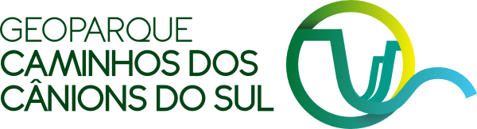

GEOPARQUE MUNDIAL DA UNESCOO geoparque destaca-se pela mais impressionante concentração de cânions e desfiladeiros verticais do Brasil, esculpidos pela erosão fluvial e recuo da escarpa da Serra Geral (Aparados da Serra), cujos paredões atingem até 1.000 metros de desnível vertical.
Patrimônio Geológico Singular: A história rochosa remonta à fragmentação do supercontinente Gondwana há 135 milhões de anos, quando um dos maiores eventos vulcânicos da Terra cobriu os campos de dunas do Deserto Botucatu com sucessivos derrames basálticos da Formação Serra Geral.
Patrimônio Paleontológico: O território abriga dezenas de paleotocas — túneis subterrâneos escavados há milhares de anos pela megafauna pleistocênica extinta (como preguiças-gigantes e tatus-gigantes), com marcas de garras perfeitamente preservadas nas paredes de arenito.
Municípios Consorciados: Praia Grande (SC), Jacinto Machado (SC), Timbé do Sul (SC), Morro Grande (SC), Cambará do Sul (RS), Mampituba (RS) e Torres (RS).